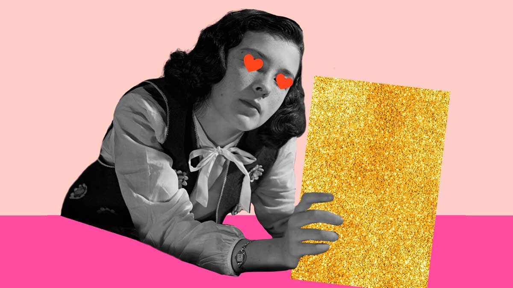

Elaine's Website
~Elaine's Interview with WHITLEY DARBY~
Question 5: What do you like to do when you are bored but don't have phones around?
Whitley: I used to love reading books - romantic novels especially!

Next~